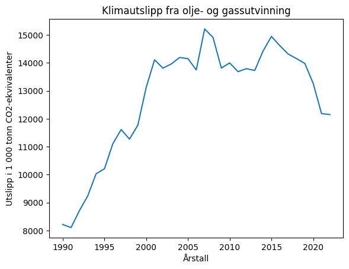

Plotting av reelle datasett#
Nå skal vi lære å plotte fra reelle datasett 📂.
Jeg vil ta utgangspunkt i en tabell fra SSB over utslipp av CO2-ekvivalenter fra olje- og gassutvinningsindustrien fra 1990-2022. Tabellen finner du her SSB: Tabell 13931.
På SSB sine nettsider kan man velge det man ønsker å ha med i en tabell. Denne tabellen kan lastes ned som flere ulike filtyper. Jeg har valgt Semikolonseparert med overskrift (csv) i dette eksempelet.
Jeg har kalt filen for oljegass.csv. Begynnelsen ser slik ut:
"13931: Klimagasser AR5, etter kilde (aktivitet), komponent, år og statistikkvariabel"
"kilde (aktivitet)";"komponent";"år";"Utslipp til luft (1 000 tonn CO2-ekvivalenter, AR5)"
"1 Olje- og gassutvinning";"Klimagasser i alt";"1990";8217
"1 Olje- og gassutvinning";"Klimagasser i alt";"1991";8107
"1 Olje- og gassutvinning";"Klimagasser i alt";"1992";8710
"1 Olje- og gassutvinning";"Klimagasser i alt";"1993";9241
"1 Olje- og gassutvinning";"Klimagasser i alt";"1994";10032
"1 Olje- og gassutvinning";"Klimagasser i alt";"1995";10211
"1 Olje- og gassutvinning";"Klimagasser i alt";"1996";11104
...
Først må jeg dele opp filen i linjer.
with open("oljegass.csv", "r") as file:
# Hopper over de tre første linjene.
for x in range(3):
file.readline()
# Lager liste med alle de resterende linjene.
linjer = file.readlines()
# Går igjennom listen
for x in linjer:
linje = x.split(";")
print(linjer[0].split(";")) # Skriver ut den første linjen for å se oppsettet
['"1 Olje- og gassutvinning"', '"Klimagasser i alt"', '"1990"', '8217\n']
Dersom jeg splitter linjene på ; så er årstallet på indeks 2 og CO2-ekvivalenter på indeks 3.
Vi ser også at årstallet har med seg noen ekstra anførselstegn "", og at CO2-ekvivalentene har med seg en nylinje-karakter \n. I tillegg er dataene av typen string.
Jeg kan bruke
.strip('"')-metoden på strings for å fjerne""-karakterene på starten og slutten av en string.Jeg kan bruke
.strip()-metoden uten parameter for å fjerne\n-karakteren.Jeg kan bruke
int()-funksjonen for å gjøre strings til heltall.
for x in linjer:
årstall = int(x.split(";")[2].strip('"'))
co2 = int(x.split(";")[3].strip())
Nå gjenstår det bare å legge årstallene og CO2-ekvivalentene i hver sin liste og plotte.
import numpy as np
import matplotlib.pyplot as plt
with open("oljegass.csv", "r") as file:
# Hopper over de tre første linjene.
for x in range(3):
file.readline()
# Lager liste med alle de resterende linjene.
linjer = file.readlines()
# Lager tomme lister
xverdier = []
yverdier = []
# Går igjennom linjene og legger data i lister.
for x in linjer:
årstall = int(x.split(";")[2].strip('"'))
co2 = int(x.split(";")[3].strip())
xverdier.append(årstall)
yverdier.append(co2)
plt.title("Klimautslipp fra olje- og gassutvinning")
plt.xlabel("Årstall")
plt.ylabel("Utslipp i 1 000 tonn CO2-ekvivalenter")
plt.plot(xverdier, yverdier)
plt.show()

Oppgaver#
Oppgave 1#
Gå til SSB Tabell 1391 og hent ut “Klimagasser i alt”, “Utslipp til luft (1 000 tonn CO2-ekvivalenter)”, alle år og “2 Industri og bergverk”.
Så lagrer du dataene som “Semikolonseparert med overskrift(csv)” og gir filen navnet “industri.csv”.
Plott grafen over tid.
Plott grafen fra “oljegass.csv” i samme plot.
Sammenlikn dataene. Hva kan du si om utviklingen av klimagassutslippene i disse to næringene?
Oppgave 2#
Gå til nettsiden for SSB og finn et datasett innenfor et tema du interesserer deg for. Lag et plott med linjediagram og et plott med
Oppgave 3#
Her er en datafil for hvor mange som ble syke med covid i 2020 og 2021: datafil
Plot kumulativt antall syke over tid. Gjør x-aksen til “dager etter 21.02.2020”.